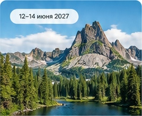
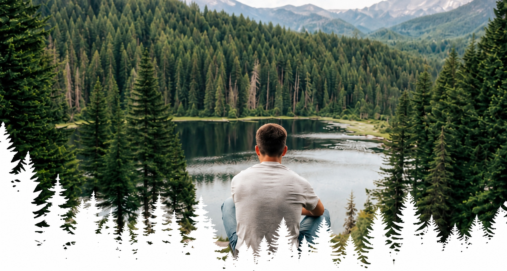
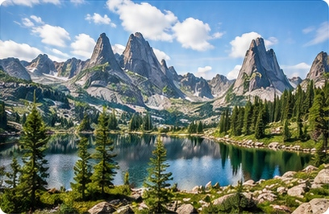
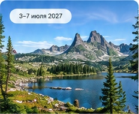
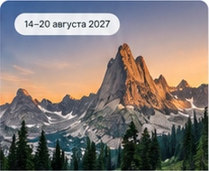

Первое знакомство

С по .
Лёгкий поход к самым известным достопримечательностям Ергаков. Идеально для первого знакомства с парком.
- Продолжительность
- 3 дня
- Сложность
- Лёгкий
Вершина
Горы, кристально чистые озёра и настоящие приключения.

Сведения из учебного макета:
Ергаки — это уникальный природный парк в сердце Саян. Гранитные пики, озёра, водопады и нетронутая природа создают идеальные условия для походов и перезагрузки.

Пример расписания из учебного макета. Даты не являются предложением бронирования.

С по .
Лёгкий поход к самым известным достопримечательностям Ергаков. Идеально для первого знакомства с парком.

С по .
Маршрут по живописным горным озёрам с ночёвками в палатках. Максимум природы и впечатлений.

С по .
Насыщенный маршрут к главным вершинам Ергаков. Для тех, кто хочет увидеть больше и испытать себя.
Величественные пики и панорамные виды.
Кристально чистые горные озёра.
Настоящая атмосфера походной жизни.
Маршруты с профессионалами.
Примеры отзывов из учебного макета.
«Ергаки — это любовь с первого взгляда! Потрясающие виды, отличная организация и душевная компания. Обязательно поеду ещё раз!»
«Невероятные места, которые невозможно забыть. Гид — настоящий профессионал, всё было продумано до мелочей. Ергаки покорили!»